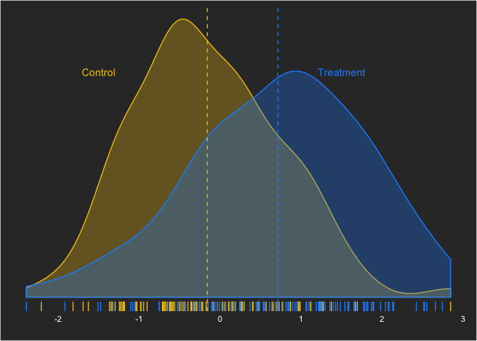
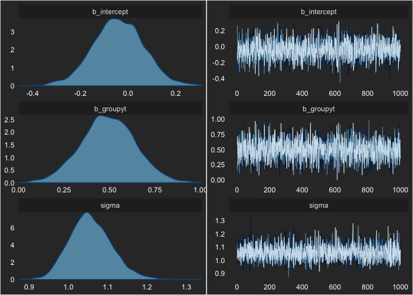
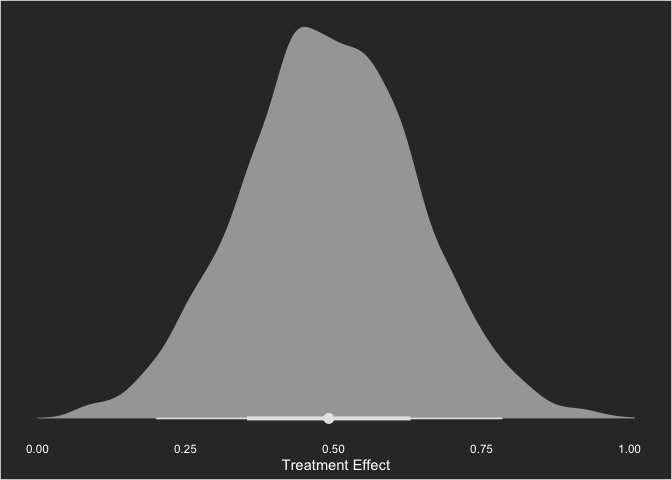
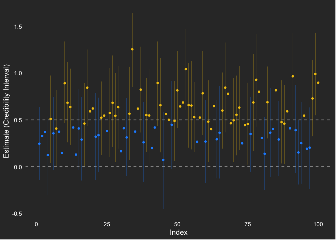
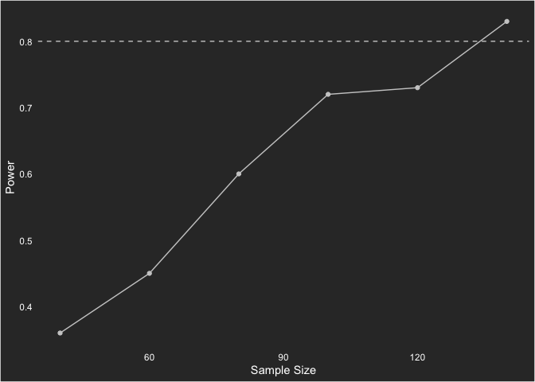
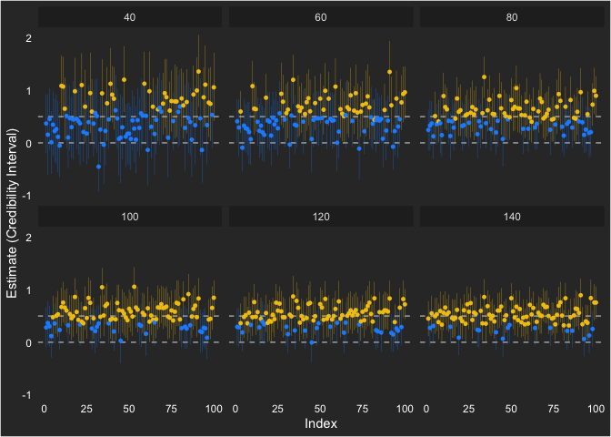

Bayesian Power Analysis with data.table, tidyverse, and brms
data.table and 2) Bayesian statistics. I’ve loved learning both and, in this post, I will combine them into a single workflow.
I’ve been studying two main topics in depth over this summer: 1) data.table and 2) Bayesian statistics. I’ve loved learning both and, in this post, I will combine them into a single workflow.
This post is a replication of a post by A. Solomon Kurzto, walking through an approach to simulating the power of Bayesian linear models. I tweeted about it here:
If you are interested in an absolutely fantastic blog about bayesian statistics, #rstats, and visualizing, check out https://t.co/zzu01jhS6Z by @SolomonKurz.
— Tyson Barrett (@healthandstats) July 20, 2019
The most recent post is about Bayesian power analysis 😃 pic.twitter.com/kOavMYRo5q
The approach to Bayesian power presented herein will be the same. That is, we’ll look at 95% credibility intervals to see if zero (the null hypothesis) is a probable value (thus this is heavily tied to the frequentist view of rejecting the null hypothesis). This essentially says: “Of the 95% most probable values of the estimate, is the null one of them?”[1] There are other ways of doing this, which we don’t cover in this post.
The difference between this post and the post by A. Solomon Kurz will mainly be that we will use data.table in conjunction with the tidyverse and the brms packages. We will also look at power curves at the end of this post as well.
library(tidyverse)
library(data.table)
library(brms)And we’ll set a custom theme throughout for the ggplot2 figures.
theme_set(theme_dark() +
theme(legend.position = "none",
panel.grid = element_blank(),
panel.background = element_rect(fill = "grey20"),
plot.background = element_rect(fill = "grey20"),
text = element_text(color = "white"),
axis.text = element_text(color = "white")))To start, we’ll set up our data situation that we want to assess. We’ll use a moderate effect size—Cohen’s d—of 0.5. (What many researchers do not realize is how much overlap a moderate-sized effect size has!) This can be written as:
yi,control = Normal(0,1)
yi,treatment = Normal(0.5,1)
which can be simulated as:

With this effect size, what kind of sample size is sufficient to draw the conclusion that there is a difference between the groups with a Bayesian linear model? As I mentioned before, we’ll define power the classical way—the ability to reject the null hypothesis given the null hypothesis is false. In future posts, we’ll look at other ways this can be defined (e.g. probability that the null is true).
To do the simulations, as A. Solomon Kurz suggests, we’ll start with a base model. This will take advantage of the speed of brms (which is based in C code). First, we’ll use some simulated data from the distribution we were working with before, with a moderate effect size.
d <- data.table(yc = rnorm(100, 0, 1),
yt = rnorm(100, .5, 1),
id = 1:100) %>%
melt(id.vars = "id", measure.vars = c("yc","yt"), variable.name = "group")
head(d)## id group value
## 1: 1 yc -0.29068872
## 2: 2 yc 0.75534496
## 3: 3 yc -0.46780088
## 4: 4 yc -0.27049469
## 5: 5 yc -0.09573956
## 6: 6 yc 0.48848687Before performing any Bayesian analysis, we need to decide on some priors. brms generally performs very weakly informative priors (flat priors). For this, we’ll use the default.
fit <- brm(data = d,
family = gaussian,
value ~ 0 + intercept + group,
prior = c(prior(normal(0, 10), class = b),
prior(student_t(3, 1, 10), class = sigma)),
seed = 1)We can check this model’s MCMC sampling using:
plot(fit)
Nothing looks concerning. We can also see the output by printing the fit object.
fit## Family: gaussian
## Links: mu = identity; sigma = identity
## Formula: value ~ 0 + intercept + group
## Data: d (Number of observations: 200)
## Samples: 4 chains, each with iter = 2000; warmup = 1000; thin = 1;
## total post-warmup samples = 4000
##
## Population-Level Effects:
## Estimate Est.Error l-95% CI u-95% CI Eff.Sample Rhat
## intercept -0.04 0.11 -0.25 0.17 2387 1.00
## groupyt 0.49 0.15 0.20 0.79 2427 1.00
##
## Family Specific Parameters:
## Estimate Est.Error l-95% CI u-95% CI Eff.Sample Rhat
## sigma 1.06 0.05 0.96 1.17 2741 1.00
##
## Samples were drawn using sampling(NUTS). For each parameter, Eff.Sample
## is a crude measure of effective sample size, and Rhat is the potential
## scale reduction factor on split chains (at convergence, Rhat = 1).We can also assess the parameter value visually. As an aside, this may be one of my favorite types of plots and may also be one of the many reasons I really like Bayesian statistics.
We’ll use the posterior_samples() function from brms and the geom_halfeyeh() from tidybayes.
# devtools::install_github("mjskay/tidybayes")
library(tidybayes)
posts <- posterior_samples(fit)
posts %>%
ggplot(aes(b_groupyt)) +
geom_halfeyeh(aes(y = 0), color = "grey90") +
scale_y_continuous(NULL, breaks = NULL) +
labs(y = "",
x = "Treatment Effect")
I can’t say enough about how much I like these plots! Anyway, with the fit model object, we can use the update() function, as it greatly increases the speed of the simulations. We’ll use this function within a three-step process:
- Create the simulated data
- Run the model on the simulated data
- Assess the power of the models
Simulated Data
The following function will be repeated many times to create all the data sets.
sim_d <- function(seed, n) {
set.seed(seed)
mu_t <- .5
mu_c <- 0
data.table(group = rep(c("control", "treatment"), n/2)) %>%
.[, value := ifelse(group == "control",
rnorm(n, mean = mu_c, sd = 1),
rnorm(n, mean = mu_t, sd = 1))]
}Running the Models
The following code runs 100 simulations, using the ability for data.table to have list columns. We will use a total sample of 80 (40 in each group).
n_sim <- 100
n <- 80
sims <- data.table(seed = 1:n_sim) %>%
.[, d := map(seed, sim_d, n = n)] %>%
.[, fit := map2(d, seed, ~update(fit, newdata = .x, seed = .y))]Our sims object contains 100 data.tables and brms models.
head(sims)## seed d fit
## 1: 1 <data.table> <brmsfit>
## 2: 2 <data.table> <brmsfit>
## 3: 3 <data.table> <brmsfit>
## 4: 4 <data.table> <brmsfit>
## 5: 5 <data.table> <brmsfit>
## 6: 6 <data.table> <brmsfit>If we look at the first row of the sims data table, we can pull out the fit column and see the full model:
sims[1, fit]## [[1]]
## Family: gaussian
## Links: mu = identity; sigma = identity
## Formula: value ~ 0 + intercept + group
## Data: .x (Number of observations: 80)
## Samples: 4 chains, each with iter = 2000; warmup = 1000; thin = 1;
## total post-warmup samples = 4000
##
## Population-Level Effects:
## Estimate Est.Error l-95% CI u-95% CI Eff.Sample Rhat
## intercept 0.19 0.14 -0.08 0.47 2208 1.00
## grouptreatment 0.25 0.20 -0.14 0.64 2101 1.00
##
## Family Specific Parameters:
## Estimate Est.Error l-95% CI u-95% CI Eff.Sample Rhat
## sigma 0.89 0.07 0.76 1.05 2535 1.00
##
## Samples were drawn using sampling(NUTS). For each parameter, Eff.Sample
## is a crude measure of effective sample size, and Rhat is the potential
## scale reduction factor on split chains (at convergence, Rhat = 1).and see the associated data:
head(sims[1, d][[1]])## group value
## 1: control -0.6264538
## 2: treatment 0.3648214
## 3: control -0.8356286
## 4: treatment -1.0235668
## 5: control 0.3295078
## 6: treatment 0.8329504Assessing the Power
We can grab the model information using the broom package’s tidy() function. And then the magical moment: using unnest() inside of a data.table. This gives us the output from tidy() and we can grab just when the term is "b_grouptreatment".
library(broom)
sims <- sims[, effects := map(fit, ~tidy(.x, prob = .95))] %>%
.[, unnest(.SD, effects)] %>%
.[term == "b_grouptreatment"] %>%
.[, powered := case_when(lower > 0 ~ 1, TRUE ~ 0)]Using the sims data table we can get counts of when the study was powered, and when it wasn’t.
sims[, .N, by = powered]## powered N
## 1: 0 40
## 2: 1 60It is awesome to be able to get this information in such concise code. Love it! Also, the 1’s are how many were powered while the 0’s are the unpowered. Thus, 60% power here.
We can also visualize it, showing the times it was powered (yellow) and when it wasn’t (blue).
sims %>%
ggplot(aes(x = seed, y = estimate, ymin = lower, ymax = upper)) +
geom_hline(yintercept = 0, linetype = "dashed", color = "grey70") +
geom_hline(yintercept = 0.5, linetype = "dashed", color = "grey70") +
geom_pointrange(size = .1, aes(color = factor(powered))) +
labs(y = "Estimate (Credibility Interval)",
x = "Index") +
scale_color_manual(values = c("dodgerblue1", "#F1C40F"))
I show the null hypothesis at 0 and the population value at 0.5. Across the simulations, the point estimate (which is not generally of emphasis for a Bayesian analysis) is consistently positive.
Overall, this approach to understanding statistical power in Bayesian statistical analysis is very familiar (since it is based on frequentist ideas). Using the default (flat) priors in brms, we saw 60% power to reject the null.
Power Curves
So what if we want to see a power curve? Essentially, we can repeat what we did at different sample sizes. Here, we’ll do 40, 60, 100, and 120 in addition to the 80 we already ran.
n_sim <- 100
n <- 140
sims140 <- data.table(seed = 1:n_sim) %>%
.[, d := map(seed, sim_d, n = n)] %>%
.[, fit := map2(d, seed, ~update(fit, newdata = .x, seed = .y))] %>%
.[, effects := map(fit, ~tidy(.x, prob = .95))] %>%
.[, unnest(.SD, effects)] %>%
.[term == "b_grouptreatment"] %>%
.[, powered := case_when(lower > 0 ~ 1, TRUE ~ 0)] %>%
.[, sample := 140]
n <- 120
sims120 <- data.table(seed = 1:n_sim) %>%
.[, d := map(seed, sim_d, n = n)] %>%
.[, fit := map2(d, seed, ~update(fit, newdata = .x, seed = .y))] %>%
.[, effects := map(fit, ~tidy(.x, prob = .95))] %>%
.[, unnest(.SD, effects)] %>%
.[term == "b_grouptreatment"] %>%
.[, powered := case_when(lower > 0 ~ 1, TRUE ~ 0)] %>%
.[, sample := 120]
n <- 100
sims100 <- data.table(seed = 1:n_sim) %>%
.[, d := map(seed, sim_d, n = n)] %>%
.[, fit := map2(d, seed, ~update(fit, newdata = .x, seed = .y))] %>%
.[, effects := map(fit, ~tidy(.x, prob = .95))] %>%
.[, unnest(.SD, effects)] %>%
.[term == "b_grouptreatment"] %>%
.[, powered := case_when(lower > 0 ~ 1, TRUE ~ 0)] %>%
.[, sample := 100]
sims80 <- sims[, sample := 80]
n <- 60
sims60 <- data.table(seed = 1:n_sim) %>%
.[, d := map(seed, sim_d, n = n)] %>%
.[, fit := map2(d, seed, ~update(fit, newdata = .x, seed = .y))] %>%
.[, effects := map(fit, ~tidy(.x, prob = .95))] %>%
.[, unnest(.SD, effects)] %>%
.[term == "b_grouptreatment"] %>%
.[, powered := case_when(lower > 0 ~ 1, TRUE ~ 0)] %>%
.[, sample := 60]
n <- 40
sims40 <- data.table(seed = 1:n_sim) %>%
.[, d := map(seed, sim_d, n = n)] %>%
.[, fit := map2(d, seed, ~update(fit, newdata = .x, seed = .y))] %>%
.[, effects := map(fit, ~tidy(.x, prob = .95))] %>%
.[, unnest(.SD, effects)] %>%
.[term == "b_grouptreatment"] %>%
.[, powered := case_when(lower > 0 ~ 1, TRUE ~ 0)] %>%
.[, sample := 40]With those run, let’s look at the curve. Given they are simulations with only 100 samples, there is some variability in the power that makes it look less like a power curve. Still, gives us an idea of statistical power.
cur <- rbindlist(list(sims40, sims60, sims80, sims100, sims120, sims140))
cur %>%
.[, mean(powered), by = sample] %>%
ggplot(aes(sample, V1)) +
geom_point(color = "grey80") +
geom_line(color = "grey80") +
geom_hline(yintercept = .8, color = "grey80", linetype = "dashed") +
labs(x = "Sample Size",
y = "Power")
We can also show how each estimate ended up looking like across the sample sizes. Notice that the individual intervals get smaller as sample size increases and the variability around the population value (0.5) gets lower as well.
ggplot(cur, aes(seed, estimate, ymin = lower, ymax = upper)) +
geom_hline(yintercept = 0, linetype = "dashed", color = "grey70") +
geom_hline(yintercept = 0.5, linetype = "dashed", color = "grey70") +
geom_pointrange(size = .1, aes(color = factor(powered))) +
labs(y = "Estimate (Credibility Interval)",
x = "Index") +
scale_color_manual(values = c("dodgerblue1", "#F1C40F")) +
facet_wrap(~sample)
If this were for a grant proposal or something similar, I’d probably want to try some different priors, ones that are more informed by pilot studies or other previous studies.
But for now, I’m going to stick with this and enjoy the fact that data.table, tidyverse, and brms make it something very complicated far less overwhelming.
[1] Note that this is very different, though subtly, from that of confidence intervals. In confidence intervals, we are saying: “If we ran the same study many times, the true population value would be contained in the confidence interval 95% of the time. So, if the null is not in the interval, then we are 95% confident the null is not the true population value.”